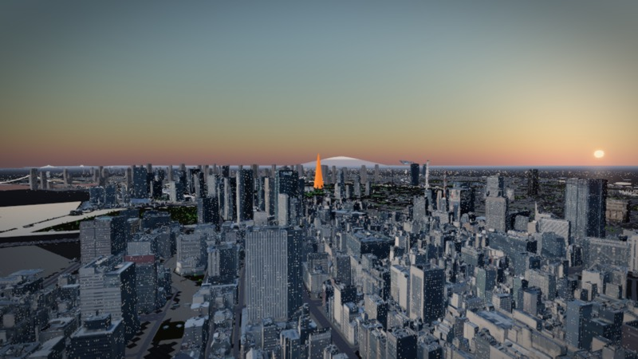
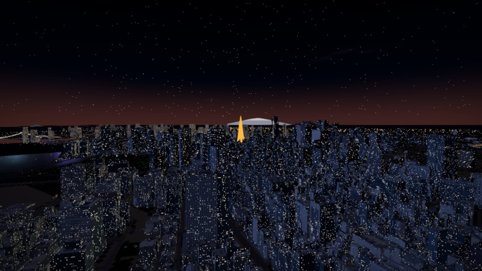
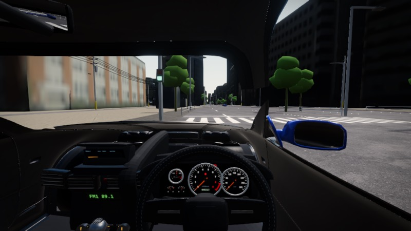
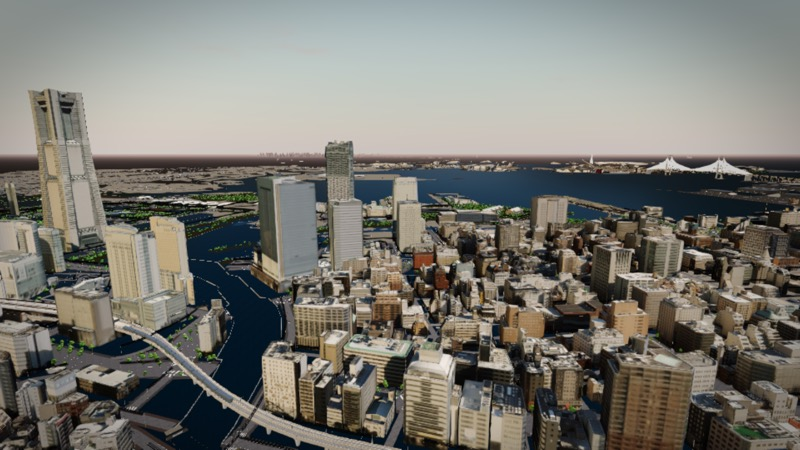
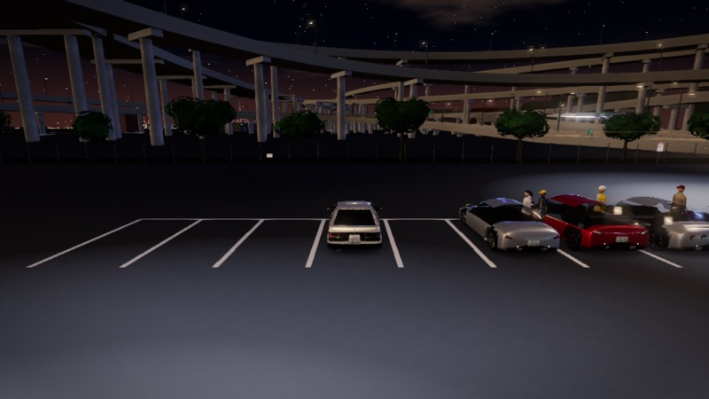

MIDNIGHT JAPANミッドナイト・ジャパン미드나잇 재팬 The real Japan, after midnight.
One connected network of real Japanese roads — Daikoku PA, the Bayshore, the C1, Hakone — lined with real buildings from Japan's national 3D city model. Free, right in your browser.
Free · Plays in your browser · No install, no sign-up
- 7drivable routes
- 46wards & cities in real 3D
- 41real cars
- 60fps target
- 20languages

Not a model of Japan. Japan.
Japan's Ministry of Land, Infrastructure, Transport and Tourism publishes an open 3D model of its cities — surveyed building shapes with real facade photos. It streams in around you as you drive, right inside the browser.
- 46 wards and cities, building by buildingAll 23 wards of Tokyo, all of Yokohama, Kawasaki, Kamakura, Fujisawa, Kisarazu and Hakone. Lit windows after dark.
- Real landmarksTokyo Tower and the Skytree are the real 3D models up close, with matching far models on the skyline.
- The real car around youThe cockpit view keeps the real model's pillars, roof, bonnet and mirrors, with a live dashboard fitted into its cabin.



Buildings: 3D City Model (Project PLATEAU), MLIT Japan Roads & map data © OpenStreetMap contributors (ODbL)
Real Japan, one connected road network
Every road is the real one, rebuilt from map and elevation data. Pick a route and start right there.
Everything a night on the Shuto needs
Build the car, set the stance, then find your line through real Japanese traffic.
Down to the details
Pick your ride
Streets and the PA
Start in 3 steps
Nothing to install, no sign-up. Three steps and you're on the road.
-
Open this link in Chrome
https://midnight-japan.github.io/Chrome or Edge works best — on Windows, Mac, Android or iPad.
-
Press “Start game” and pick your car
The lobby opens first. Choose a car, its colour and plate in the garage.
Play now -
Press “Depart”
You roll out at Daikoku PA, and a short tutorial walks you through the controls.
Mobile & tablet
Tap Play — on-screen pedals and steering appear automatically. Use “Add to Home Screen” to launch it like an app.
System requirements
Controls
Frequently asked questions
